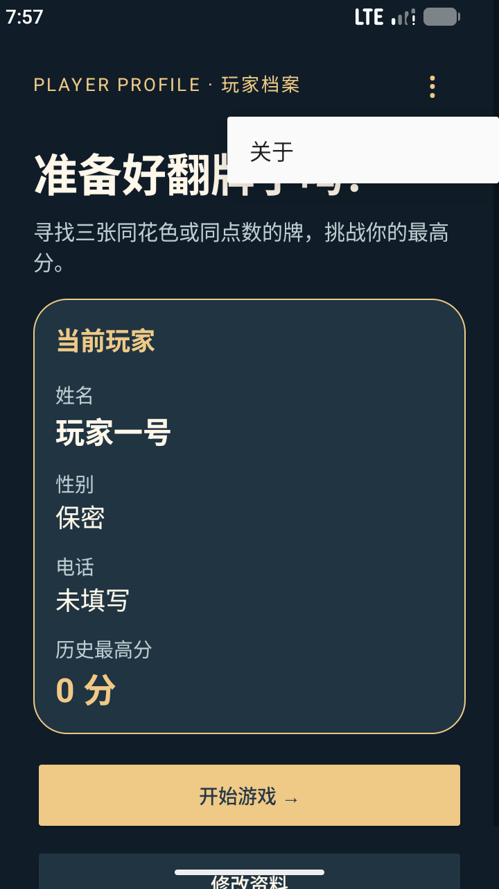
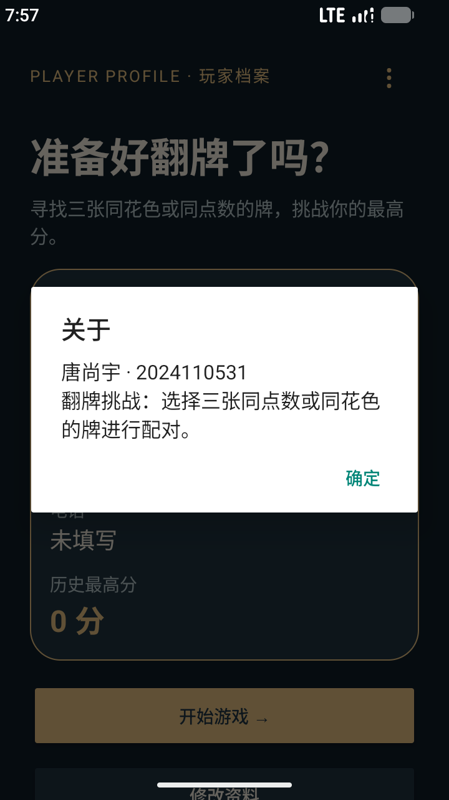
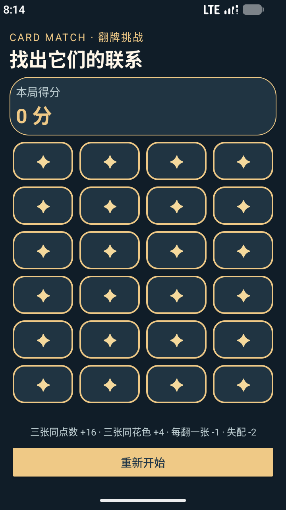
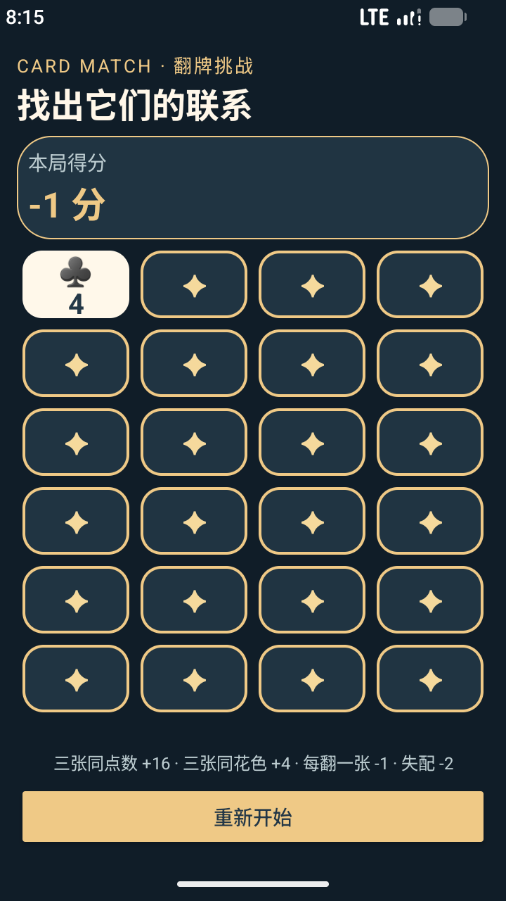
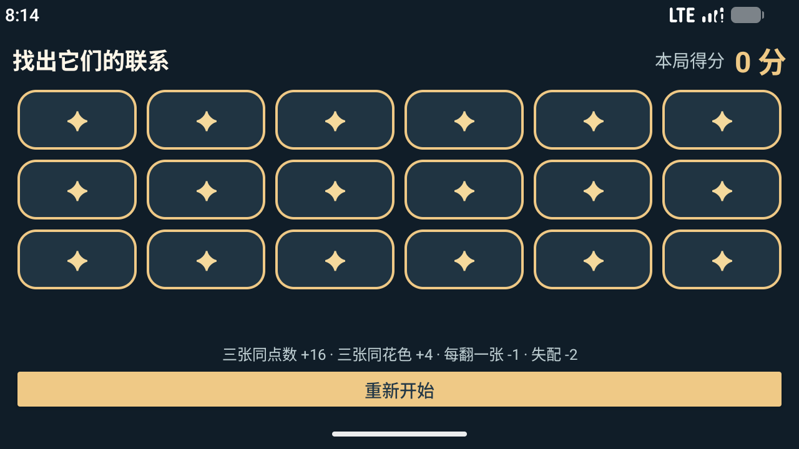

掌握 RecyclerView 与适配器、菜单和对话框的使用；在原有翻牌游戏上实践 MVC 设计模式，支持横竖屏、三张牌配对，并通过单元测试和 UI 测试验证功能。所有界面文字使用字符串资源，不在布局和界面代码中直接写入显示文案。
主页使用 PopupMenu 展示“关于”菜单，点击后用 AlertDialog 展示作者和玩法。游戏页使用 RecyclerView 和 GridLayoutManager 呈现牌面：竖屏 4 列、24 张牌；横屏 6 列、18 张牌。横屏采用紧凑布局，在模拟器上一屏完整显示 18 张牌。旋转改变牌数时开启新局；同方向的系统重建通过 onSaveInstanceState 还原牌面与得分。
Model 包含 Card、Deck、CardMatchingGame：每张牌从 52 张不重复的牌堆随机抽取。选择三张牌，全部同点数时加 16 分，全部同花色时加 4 分；每次翻牌扣 1 分，第三张失配时再扣 2 分，同时盖回前两张，第三张保持翻开。点击已翻开的未匹配牌可取消选择；匹配的三张牌不可再次翻开。无可匹配三张牌时显示结束提示；reset() 重新洗牌并将得分归零。View 由布局、卡牌 drawable 和字符串资源构成；Controller（GameActivity）响应 CardAdapter 的点击回调并同步模型与界面。
fun match(others: List<Card>): Int = when {
others.size != 2 -> 0
others.all { it.rank == rank } -> 4
others.all { it.suit == suit } -> 1
else -> 0
}
val chosen = cards.filter { it.isChosen && !it.isMatched }
if (chosen.size == 2) {
val matchScore = card.match(chosen)
if (matchScore > 0) {
score += matchScore * 4
chosen.forEach { it.isMatched = true }
card.isMatched = true
} else {
score -= 2
chosen.forEach { it.isChosen = false }
}
}
score -= 1
card.isChosen = true
class CardAdapter(
private val cards: () -> List<Card>,
private val isFinished: () -> Boolean,
private val onCardClick: (Int) -> Unit
) : RecyclerView.Adapter<CardAdapter.CardViewHolder>() {
override fun getItemCount(): Int = cards().size
}
view.setOnClickListener {
val index = holder.bindingAdapterPosition
if (index != RecyclerView.NO_POSITION) onCardClick(index)
}
val cardCount = resources.getInteger(R.integer.game_card_count)
game = restoreGame(savedInstanceState, cardCount) ?: CardMatchingGame(cardCount)
cardAdapter = CardAdapter({ game.cards }, { game.isFinished }) { index ->
game.chooseCardAtIndex(index)
render()
}
findViewById<RecyclerView>(R.id.cardGrid).apply {
layoutManager = GridLayoutManager(this@GameActivity, resources.getInteger(R.integer.game_column_count))
adapter = cardAdapter
}
findViewById<android.view.View>(R.id.restartButton).setOnClickListener {
game.reset()
render()
}





| 方法 | 测试内容 | 预期及实测 |
|---|---|---|
| JUnit 单元测试（7 项） | 牌堆去重；三张同点数/同花色；失配；无可匹配三张；reset；两种牌数 | 同点数三翻后为 13 分，同花色为 1 分，失配为 -5 分；其余状态与预期一致。 |
| Espresso UI 测试（5 项） | 修改资料；翻牌与重开；关于菜单与对话框；横竖屏牌数；同方向重建 | 资料正确更新；重开清零；对话框显示；适配器竖屏 24 张、横屏 18 张；重建后牌数和得分保留。 |
实测 Debug APK 成功构建，上述单元测试和模拟器 UI 测试通过。最初的横屏测试误以 RecyclerView 的子 View 数量等于牌的总数，导致断言失败；RecyclerView 只创建屏幕附近的子 View，改为核对 Adapter.itemCount 后通过。这也说明适配器数据量与屏幕可见子项数必须区分。
本实验完成了菜单、对话框、RecyclerView、适配器回调、reset 和三张牌配对，模型与界面职责明确。受随机发牌影响，每局可配对的牌组数量不固定；游戏在无可匹配三张牌时停止。切换横竖屏因为牌数要求不同，会重新开局；用户资料与最高分仅存于进程内。测试覆盖主要逻辑，但尚可补充更多设备尺寸及无障碍测试。
复现方式：运行 ./gradlew.bat :app:testDebugUnitTest :app:connectedDebugAndroidTest（UI 测试需要连接 Android 设备或模拟器）。